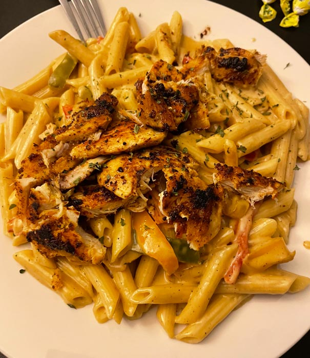

Rasta Pasta
A recipe my boyfriend first cooked for me and we’ve been obsessed ever since! This dish is also quite versatile! If you’re looking to make a tasty pasta without simmering sauce all day (or just love white sauce pasta), this dish is perfect for you!

Ingredients:
- 1 chicken breast
- Penne pasta (or any pasta of choice)
- 3 bell peppers (I like to get red, green, and yellow!)
- Heavy whipping cream
- Sesame oil and/or butter
- Cajun seasoning
- Smoked paprika (regular paprika works!)
- Poultry/all-purpose seasoning (I prefer Adobo)
- Shredded/grated parmesan cheese
- Salt & pepper to taste
Directions:
- Start boiling water in advance while you cook!
- Slice chicken breast and peppers into small strips.
- In a large pan with some depth, add a tablespoon of sesame oil/butter (I like to go half-and-half with both!) and wait until hot/melted.
- Add in your chicken and lightly season with all of the seasonings. Emphasize lightly, because we want all the flavor to be in our sauce -- otherwise, it will turn out very salty. Cook evenly for about 5-6 minutes.
- Add your pasta of choice to the boiling water and cook until al-dente (or to your preference).
- Remove the chicken from the pan, then add in the peppers. Cook until they are slightly softened.
- Add in heavy cream -- enough to coat the peppers. You can pour in more depending on how much sauce you’d like!
- Add in about a cup of parmesan and mix until the sauce thickens up. You can continue to add more cheese until it reaches a creamy consistency.
- Drain the pasta, leaving a little bit of pasta water, and then pour it into your sauce. Mix evenly.
- Finally, add in your chicken strips and mix everything together.
- Enjoy!
Table of Contents
Recipes